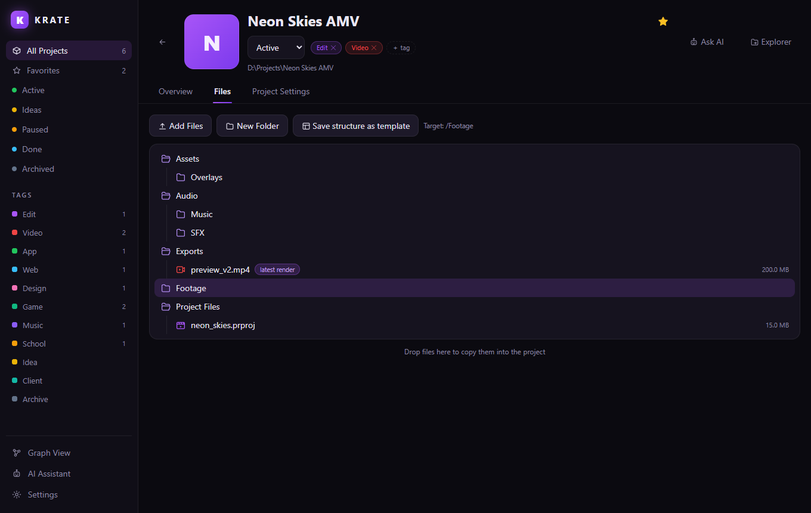

Krate is a local-first project organizer for Windows. Tag your projects, template
their folder structure, nickname the files that matter — then pull any of them up
from anywhere with one hotkey, see them as a graph, or ask your AI about them.
Free & open source · MIT · no account, no cloud, no tracking
Built for people with too many projects
Edits, apps, designs, beats, school stuff — every project is a normal folder on your disk, organized by Krate.
Projects as folders
One default projects folder, or any custom location per project. No database — a tiny krate.json rides along in each folder.
Tags & statuses
Preset tags like Edit, Video, App and Web plus unlimited custom tags with custom colors. Filter by tag or by Idea → Active → Done.
Folder templates
Build structures in a visual tree editor and attach starter files that ship with every new project — or save any project's layout as a template.
File nicknames
Call it “main clip”, not render_v7_FINAL2.mp4. Nicknames are searchable and show up as badges everywhere.
Global quick search
One hotkey anywhere in Windows. Search every project, file, nickname and link at once — fuzzy matching included.
Graph view
See one project — or your whole library — as an interactive Obsidian-style graph. Drag nodes, zoom, click to open.
AI assistant
Sign in to Claude, ChatGPT, Gemini or Copilot with your own account. One click copies a project's full context into the chat.
Cloud links
Attach Google Drive folders, Dropbox shares or repos to any project. They're searchable and open right from the overlay.
Favorites
Pin the projects you're working on — they float to the top of the grid and get their own filter.
Notes & covers
Descriptions, timestamped comments and a cover image per project, so your library is scannable at a glance.
Drag & drop, both ways
Drop files onto Krate to sort them into a project. Drag results out of the overlay straight into Premiere, Discord or Explorer.
Local-first
Your files never leave your machine. Uninstall Krate and every folder is exactly where it always was.
Any file. One hotkey. Zero digging.
The quick-search overlay
Press Ctrl+Alt+K in any app and start typing —
project names, file names and your nicknames are all searched at once.
Or hit Tab and arrow-key through your folder structure instead.
Enter open file / enter folder
Ctrl+Enter show in Explorer
Shift+Enter open in the Krate window
Tab search ⇄ browse mode
drag a row drop the file anywhere
Your library as a living graph
Flip to Graph View and Krate lays out projects, tags, folders, files and
links as a force-directed graph — just like your favorite note app, but for
real files on disk.
Whole library — projects cluster around shared tags.
Single project — folders and files fan out, nicknames glow.
Interactive — drag nodes, zoom, hover to highlight, click to open.
Your structure, everywhere
Krate shows the real folder tree of each project — with nickname badges,
quick actions and drag & drop import.
Visual templates — build folder structures in a tree editor, attach starter files, done.
Add files fast — drop them on the window, they're copied into the right subfolder.
Open or reveal — jump to any file in Explorer with one click.

Honest data storage
Everything Krate knows about a project lives inside the project folder itself — portable, syncable, yours.
MyProject/
├─ krate.json ← title, tags, notes, links, nicknames
├─ .krate/ ← cover image
└─ …your files, exactly as you put them